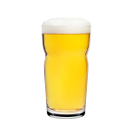
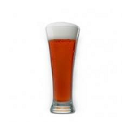
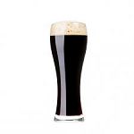

Los kits contienen todos los elementos para la elaboración de 20 lts de cerveza, malta base(molida), malta especiales(sin moler), lúpulo de amargor y aroma(10 grs c/u), levadura y clarificante.
Golden Ale
Estilo británico de color dorado y fermentación alta, lo que le otorga aromas frutados. IBU: 20-30. Color: 14-30. Alcohol: 6-7,5%.
Pilsen
Cerveza dorada, óptimo balance entre sabor de la malta y el lúpulo, estilo lager. IBU: 20-30. Color: 2-5. Alcohol: 3-5,5%.
Brown Ale
Típico estilo inglés, el aporte de maltas caramelo y chocolate se aprecia en su aroma y sabor. IBU: 24-30. Color: 15-35. Alcohol: 4-5%.
Bock
Cerveza negra, clásico estilo alemán lager con aroma y sabor de maltas tostadas. IBU: 24-27. Color: 14-30. Alcohol: 6-7,5%.
Porter
Cerveza negra, nacida en liverpool. Es una cerveza con aromas y sabor a malta tostada. IBU: 18-35. Color: 20-30. Alcohol: 4-5,4%.
Ipa
Cerveza inglesa de color ambar y elevado amargor. IBU: 40-55. Color: 4-12. Alcohol: 3,4-5%.
Stout
Estilo irlandes, es una cerveza negra de cuerpo robusto, aromas tostados y café. IBU: 25-45. Color: 25-40. Alcohol: 4-4,5%.
Pale Ale
Cerveza típica inglesa de color rojizo con aroma a fruta y caramelo. IBU: 18-28. Color: 6-19. Alcohol: 4,5-6,2%.
Kolsh
Típico de la ciudad de Colonia, esta cerveza de alta fermentación es de aroma malteado y fresco. IBU: 20-30. Color: 3,5-5. Alcohol: 4,4-5,2%.
Oatmeal Stout
Elaborada con avena, lo que le otorga mayor cremosidad y sedosidad. IBU: 22-40. Color: 23-40. Alcohol: 4,2-5,9%.
Cream Stout
Variante del estilo stout, se distingue por ser mas cremosa y de mayor cuerpo. IBU: 25-35. Color: 35-70. Alcohol: 4-6,5%.
Scottish
Cerveza escocesa con un marcado sabor a malta, de color cobrizo y textura cremosa. IBU: 10-20. Color: 17-22. Alcohol: 2,5-6%.
Colorada del sur
Dorado cobrizo fuertemente acentuado, amargor destacado que contrasta con el aroma dulce a caramelo. IBU: 22-25. Color: 18-20. Alcohol: 5%.
Negra del sur
Color oscuro, sabor persistente con un amargor en armonía con el tostado de sus granos. IBU: 25-35. Color: 30-40. Alcohol: 6-7%.
Dorada del sur
Dorado pálido, de amargor suave y apacible frutado de ésteres. IBU: 15-20. Color: 3-4. Alcohol: 4-5%.